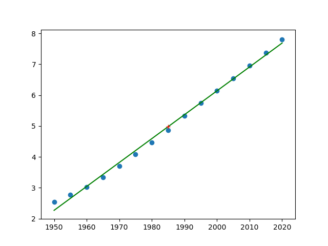

TD08 : SQL, matrices, régression, simulations⚓︎
1. Entraînement SQL⚓︎
Exercice 1
On étudie (encore) une base de données sur le cinéma, qui possède deux tables, movies et actors.

- la table
moviespossède un attributidqui est sa clé primaire. - la table
actorspossède un attributidqui est sa clé primaire. Elle possède aussi un attributmovie_id, qui fait référence à l'attributidde la tablemovies.movie_idest donc une clé étrangère.
Question 1
Afficher le titre et le nom du réalisateur de tous les films français.
Correction
SELECT title, director
FROM movies
WHERE country = 'France'
Question 2
Le titre du film «Intouchables» de Nakache et Toledano apparaît comme «The Intouchables». Modifier ce titre pour qu'il apparaisse sous le nom «Intouchables».
Vérifier si votre modification est correcte :
Correction
UPDATE movies
SET title = 'Intouchables'
WHERE title = 'The Intouchables'
Question 3
Le réalisateur Carl Theodor Dreyer est un réalisateur Danois qui est manifestement là par erreur. Supprimer totalement de la table movies tous les films de ce réalisateur.
Vérifier si votre modification est correcte :
Correction
DELETE FROM movies
WHERE director = 'Carl Theodor Dreyer'
Question 4
Afficher le titre, le réalisateur et l'année de tous les films dans lesquels a joué l'acteur Mathieu Kassovitz depuis l'année 2000.
Correction
SELECT movies.title, movies.director, movies.year
FROM movies
INNER JOIN actors ON movies.id = actors.movie_id
WHERE actors.name = 'Mathieu Kassovitz' AND movies.year >= 2000
2. Retour sur les matrices⚓︎
 Lien pour ouvrir une console Python dans un nouvel onglet
Lien pour ouvrir une console Python dans un nouvel onglet
 Syntaxe des opérations matricielles
Syntaxe des opérations matricielles
Saisir une matrice
La matrice
\(A=\begin{pmatrix}
1 & 2 & 3 \\
4 & 5 & 6 \\
7 & 8 & 9
\end{pmatrix}\)
se saisira par le code suivant :
import numpy as np
A = np.array([[1, 2, 3], [4, 5, 6], [7, 8, 9]])
Saisir un vecteur-ligne
Le vecteur
\(X=\begin{pmatrix}
1 & 2 & 3
\end{pmatrix}\)
se saisira par le code suivant :
X = np.array([1, 2, 3])
Saisir un vecteur-colonne
Le vecteur
\(X=\begin{pmatrix}
1 \\
2 \\
3
\end{pmatrix}\)
se saisira par le code suivant :
X = np.array([[1], [2], [3]])
Effectuer un produit matriciel
Le calcul du produit matriciel \(A \times X\) se fera par l'instruction np.dot(A, X) :
>>> np.dot(A, X)
array([[14],
[32],
[50]])
Utiliser une matrice identité
La matrice
\(I=\begin{pmatrix}
1 & 0 & 0 \\
0 & 1 & 0 \\
0 & 0 & 1
\end{pmatrix}\)
se saisira par le code suivant :
I = np.eye(3)
Exercice 2
d'après le sujet 0 n°2 Ecricome 2023
On note \(B=\begin{pmatrix} -1 & 4 & -1 \\ -2 & 5 & 2 \\ 0 & 0 & -2 \end{pmatrix}\), \(P=\begin{pmatrix} 1 & 2 & 1 \\ 0 & 1 & 1 \\ 1 & 0 & 0 \end{pmatrix}\), \(Q=\begin{pmatrix} 0 & 0 & 1 \\ 1 & -1 & -1 \\ -1 & 2 & 1 \end{pmatrix}\) et \(D=\begin{pmatrix} -2 & 0 & 0 \\ 0 & 1 & 0 \\ 0 & 0 & 3 \end{pmatrix}\),
Q1. Créer en Python la variable B correspondant à la matrice \(B\), ainsi que les variables X1, X2, X3 correspondant respectivement aux vecteurs \(X_1\), \(X_2\) et \(X_3\) ci-dessous :
\(X_1=\begin{pmatrix} 1 \\ 0 \\ 1 \end{pmatrix}\), \(X_2=\begin{pmatrix} 2 \\ 1 \\ 0 \end{pmatrix}\), \(X_3=\begin{pmatrix} 1 \\ 1 \\ 0 \end{pmatrix}\)
Correction
1 2 3 4 5 6 | |
Q2. Par des calculs en Python, montrer que les vecteurs \(X_1\), \(X_2\) et \(X_3\) sont des vecteurs propres de la matrice \(B\), et préciser pour chacun la valeur propre associée.
Correction
>>> np.dot(B, X1)
array([[-2], [0], [-2]])
>>> np.dot(B, X2)
array([[2], [1], [0]])
>>> np.dot(B, X3)
array([[3], [3], [0]])
- \(BX_1 = 2X_1\), donc \(X_1\) est un vecteur propre associé à la valeur propre 2.
- \(BX_2 = X_2\), donc \(X_2\) est un vecteur propre associé à la valeur propre 1.
- \(BX_3 = 3X_3\), donc \(X_3\) est un vecteur propre associé à la valeur propre 3.
De l'intérêt de bien calculer les valeurs propres et vecteurs propres
Q3. On considère le script Python suivant :
1 2 3 4 5 6 7 8 9 10 11 | |
[[0. 0. 0.]
[0. 0. 0.]
[0. 0. 0.]]
[[-2 0 0]
[ 0 1 0]
[ 0 0 3]]
Que peut-on en conjecturer sur la matrice \(P\) ? sur la matrice \(D\) ?
3. Régression linéaire⚓︎
Coefficient de corrélation linéaire de deux variables aléatoires
Définition
Le coefficient de corrélation linéaire de deux variables aléatoires \(X\) et \(Y\) est le réel \(\rho(X,Y)\) donné par la formule :
Interprétation
- Si \(X\) et \(Y\) sont indépendantes, alors \(\rho(X,Y) = 0\)
- Si \(X\) et \(Y\) sont liées par une combinaison linéaire (ex : \(Y = 3X+2\)), alors \(\rho(X,Y) = \pm 1\)
Utilisation en statistiques
Lorsque \(\rho\) est en valeur absolue proche de 1, on peut conjecturer que le phénomène observé est prédictible. Le tracé de la droite de régression permet alors de faire des prévisions.
 Cet outil sert à montrer une corrélation. Mais corrélation n'est pas causalité !
Cet outil sert à montrer une corrélation. Mais corrélation n'est pas causalité !
Syntaxe Python
Calcul du coefficient de corrélation : np.corrcoef(x, y)[0, 1]
Considérons le code suivant :
1 2 3 4 5 6 7 8 9 10 11 12 13 14 15 16 17 18 | |
Le tracé laisse apparaître une distribution des points qui semblent être situés autour d'une droite. Ceci est confirmé par le calcul du coefficient de corrélation linéaire ( calculé par l'instruction np.corrcoef(x,y)[0,1] )
>>> np.corrcoef(x,y)[0,1]
0.9732489445263028

Calcul et tracé du point moyen : np.mean(x)
La fonction np.mean(x) permet de calculer la valeur moyenne d'un ensemble de valeurs stockées dans la variable x.
Le point moyen d'une série statistique double peut donc se tracer par :
plt.plot([np.mean(x)], [np.mean(y)], 'r+')

Tracé de la droite de régression : a, b = np.polyfit(x, y, 1)
- Le calcul du coefficient directeur
aet de l'ordonnée à l'originebde la droite de régression se fait par la commande a, b = np.polyfit(x, y, 1) - Le tracé de la droite se fait par
plt.plot(x, a*x + b)
Insérer les lignes :
a, b = np.polyfit(x, y, 1)
plt.plot(x, a*x + b, 'g-')

Exercice 3
d'après Mathématiques Dunod
En 2019, l'ONU prévoyait que la population mondiale attendrait 10 milliards d'habitants en 2050. On se propose de vérifier ce résultat.
L'évolution de la population mondiale depuis 1950 est donnée dans le tableau ci-dessous (en haut : l'année, en bas : la population en milliards d'habitants)
| 1950 | 1955 | 1960 | 1965 | 1970 | 1975 | 1980 | 1985 | 1990 | 1995 | 2000 | 2005 | 2010 | 2015 | 2020 |
|---|---|---|---|---|---|---|---|---|---|---|---|---|---|---|
| 2,54 | 2,77 | 3,03 | 3,34 | 3,70 | 4,08 | 4,46 | 4,87 | 5,33 | 5,74 | 6,14 | 6,54 | 6,96 | 7,38 | 7,80 |
On note \(X\) et \(Y\) les variables égales respectivement à l'année et au nombre d'habitants dans le monde (en milliards). On note \(x\) et \(y\) les séries statistiques respectivement associées.
Q1. Écrire les commandes Python permettant de représenter le nuage de points associé à la série double \((x,y)\) et marquer le point moyen du nuage par une croix rouge.
On pourra utiliser la liste
1 | |
pour créer la série \(y\).
Correction
1 2 3 4 5 6 7 8 9 10 | |
Q2. Prévoir le signe du coefficient de corrélation linéaire de la série double \((x,y)\).
Correction
Plus l'année augmente, plus la population augmente : \(\rho\) sera donc positif.
Q3. Calculer le coefficient de corrélation linéaire et tracer la droite de régression.
Correction
1 2 3 4 5 6 7 8 9 10 11 12 13 14 15 16 17 18 | |
Coefficient de corrélation linéaire :
>>> coeff
0.9979169799754183

Q4. À l'aide des coefficients \(a\) et \(b\) de la droite de régression, conjecturer la population mondiale en 2050 et vérifier la prévision de l'ONU.
Correction
>>> a
0.07745714285714277
>>> b
-148.77376190476173
>>> a*2050 + b
10.013380952380942
La prévision de l'ONU est donc compatible avec notre simulation.
4. Retour sur les simulations⚓︎
Syntaxe des lois usuelles
Rappel : on utilise les simulateurs de lois du module random de la bibliothèque numpy.
Ceci nécessite systématiquement la présence des deux lignes suivantes au début de chaque script :
1 2 | |
-
loi uniforme :
rd.random()renvoie un réel dans \([0;1]\) qui suit une loi uniforme (chaque réel a la même probabilité d'apparition)rd.randint(a,b)renvoie un entier dans \([a;b[\) qui suit une loi uniforme (chaque entier a la même probabilité d'apparition). Attention, la valeur \(b\) n'est pas prise. Ce qui signifie que pour un tirage aléatoire uniforme de 0 et de 1, il faut utiliser l'expressionrd.randint(0,2).
-
loi binomiale :
rd.binomial(n,p)renvoie un entier qui suit une loi binomiale de paramètre \((n,p)\). (\(n\) répétitions d'une épreuve de Bernoulli de paramètre \(p\)) -
loi géométrique :
rd.geometric(p)renvoie un entier qui suit une loi géométrique de paramètre \(p\) (nombre d'expériences de Bernoulli de paramètre \(p\) avant l'apparition du premier succès) -
loi exponentielle :
rd.exponential(1/lambda)renvoie un réel qui suit une loi exponentielle de paramètrelambda.
 Comment renvoyer un vecteur plutôt qu'une seule valeur unique ? Il suffit de rajouter le nombre de simulations désirées comme dernier paramètre dans la parenthèse.
Comment renvoyer un vecteur plutôt qu'une seule valeur unique ? Il suffit de rajouter le nombre de simulations désirées comme dernier paramètre dans la parenthèse.
Exemple :
Pour simuler 10 tirages aléatoires de nombres égaux à 0 ou à 1, on utilisera :
>>> X = rd.randint(0,2,10)
>>> X
array([0, 1, 0, 0, 1, 0, 0, 0, 1, 1])
Pour connaître la valeur du 5ème tirage, on appelera :
>>> X[4]
1
Lien pour ouvrir une console Python dans un nouvel onglet (sous Chrome de préférence)
Exercice 4
Antoine et Béatrice jouent au Badminton. On suppose que lors de chaque échange, le joueur qui a le service emporte le point avec une probabilité \(\dfrac{2}{3}\) et le perd avec une probabilité \(\dfrac{1}{3}\).
On suppose que c’est Antoine qui a le service lors du premier échange. Ensuite, selon les règles de ce jeu, celui qui emporte l’échange marque un point et obtient le service pour l’échange suivant.
On souhaite simuler 20 échanges (incluant le premier où Antoine sert), et afficher le nombre de points marqués par Antoine.
1 2 3 4 5 6 7 8 9 10 11 12 | |
Correction
1 2 3 4 5 6 7 8 9 10 11 12 | |
Exercice 5
Écrire un code où l'utilisateur doit deviner un nombre choisi aléatoirement par l'ordinateur entre 1 et 100. L'utilisateur devra être guidé après chaque proposition par les instructions «trop grand» ou «trop petit».
aide :
1 2 3 4 5 6 7 | |